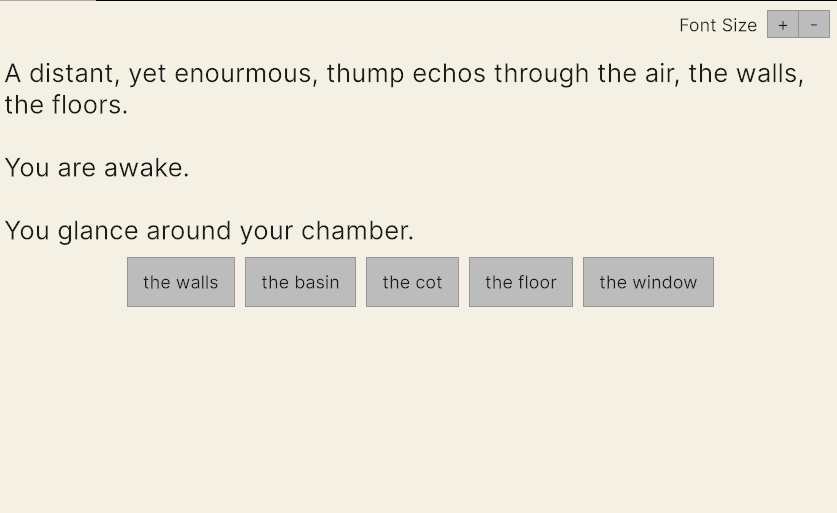
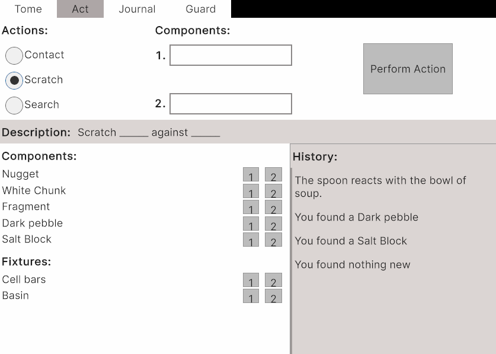
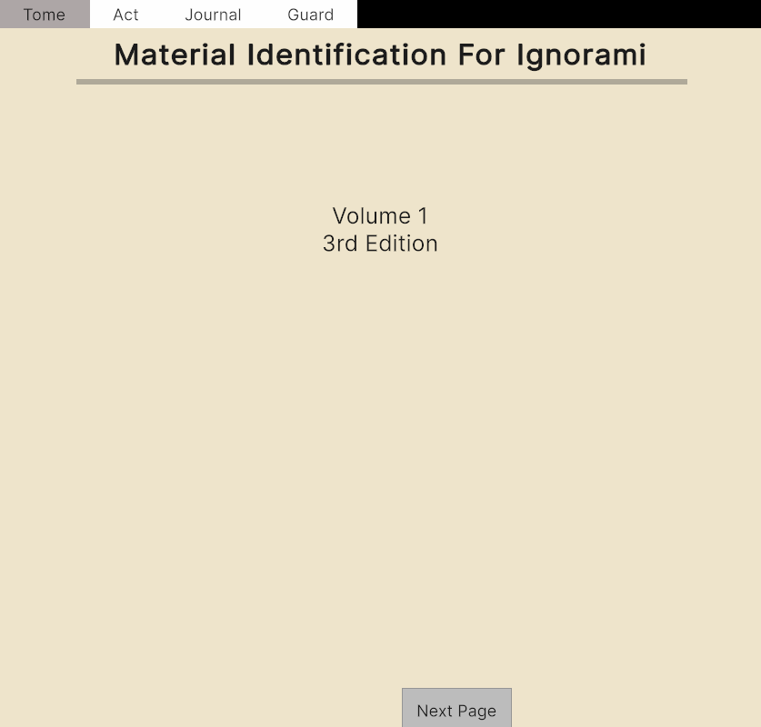

In June of 2025 I started chipping away at a project I've had in my head for awhile. I'm captivated by dropping someone into a strange, virtual world, giving them a few verbs, and telling them "Okay, figure some things out. Where are you? How do the laws of reality function here? What is THAT thing?"
I've crafted a interactive fiction and puzzle game based on this premise. You follow along with a written narrative and participate in the protagonists struggles in order to read onwards.

In order to finish this project, I needed to keep it minimal. Illistrations? 3D modelled environments? Audio? I can't do those things. Not to my own standards at least. I do wanna practice them and get better but that isn't the goal of this project. The goal is to practice writing an interactive story and to develop some reusable tools for delivering that story. I can write code and I can write prose. I'm happy with those things and those things will do.
To constrain scope, I limit the player's interaction with the world to the realm of buttons, toggles, sliders, and dropdowns. I think it's quite cool. You don't see with your eyes, you see with your clicks.

A look into how you experiment in order to learn about the world around you.
I'm hesitant about releasing it. I've ironed out a lot of issues. It's stable and can be completed front to back. So why not?
It's a dense one and not the most approachable. It takes about 40-60 minutes to reach the end of the game. This is an astonishing amount of playtime for such a simple project. While I'm impressed at the size of the experience, some of that playtime is the product of difficulty.
I have few text colors that really ought to be changed because they are a bit hard to read against the background color. That should be an easy win.
In essence, I'm caught between wanting it to be a little bit more polished and really wanting to move on and not touch it anymore. I think I'll leave it in the drafts folder of my life for a little longer while I build up some morale to push it across the finish line with a few minor improvements.

This is a tome the player must study to learn about the materials they will encounter.